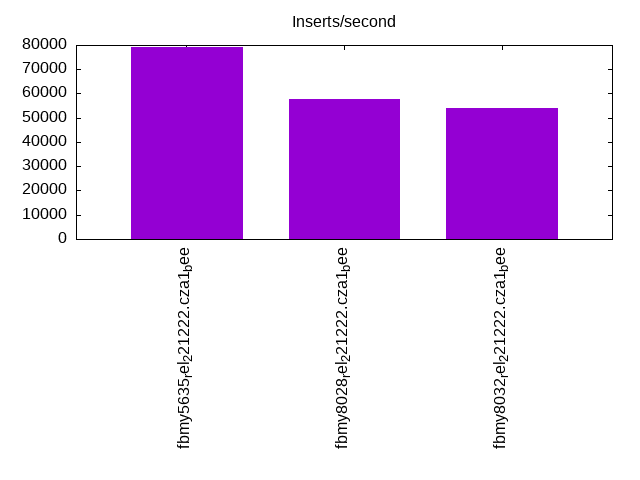
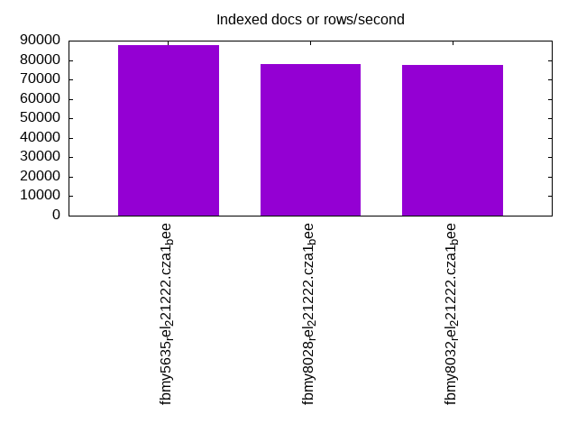
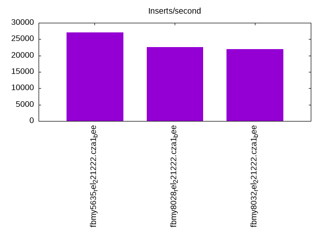
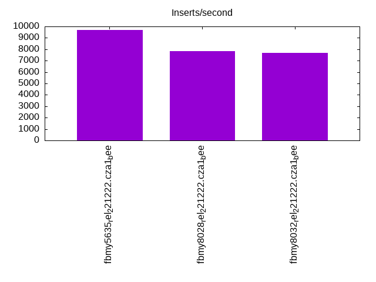
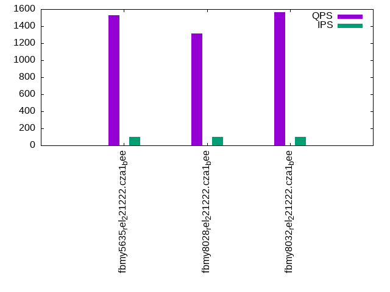
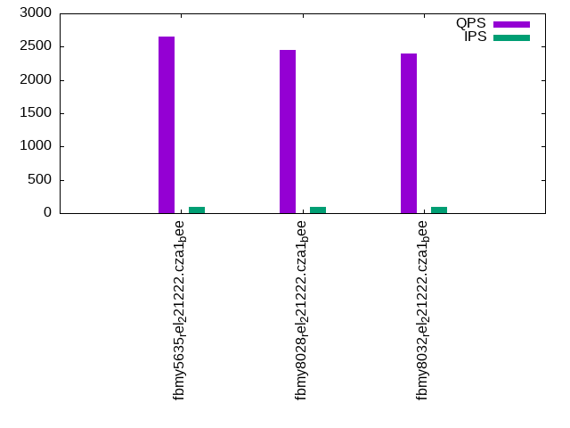
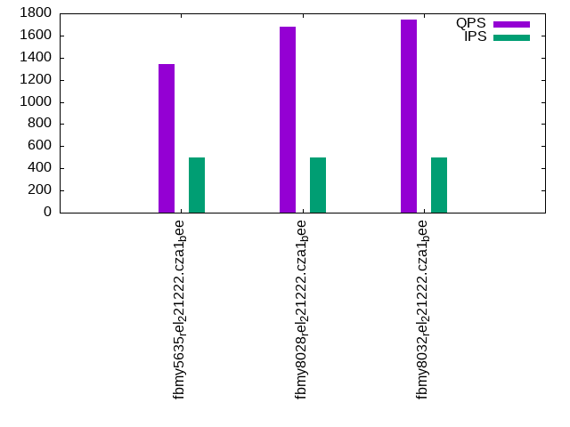
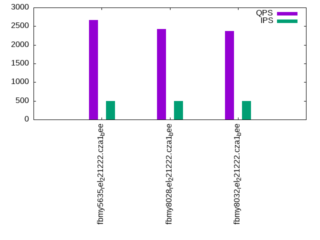
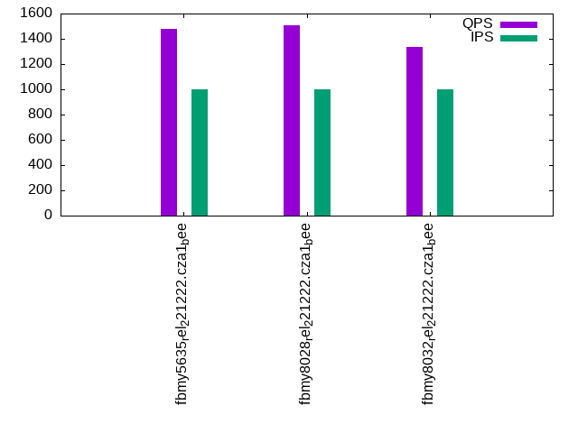
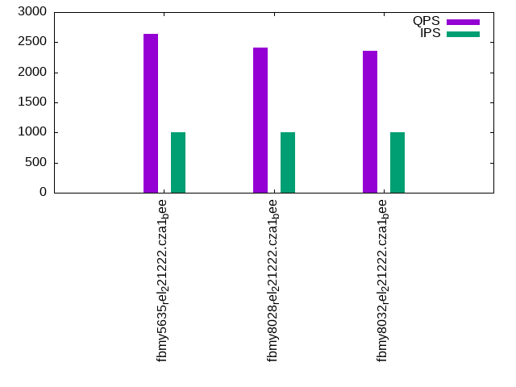

This is a report for the insert benchmark with 30M docs and 1 client(s). It is generated by scripts (bash, awk, sed) and Tufte might not be impressed. An overview of the insert benchmark is here and a short update is here. Below, by DBMS, I mean DBMS+version.config. An example is my8020.c10b40 where my means MySQL, 8020 is version 8.0.20 and c10b40 is the name for the configuration file.
The test server has a Beelink SER4 with 8 AMD cores, 16G RAM and an NVMe SSD. It is described here. The benchmark was run with 1 client and there were 1 or 3 connections per client (1 for queries or inserts without rate limits, 1+1 for rate limited inserts+deletes). It uses 1 table. It loads 30M rows per table without secondary indexes, creates 3 secondary indexes per table, then inserts 50m+50m rows per table with a delete per insert to avoid growing the table. It then does 6 read+write tests for 1800s each that do queries as fast as possible with 100,100,500,500,1000,1000 inserts/s and the same for deletes/s per client concurrent with the queries. The database is cached in memory. Clients and the DBMS share one server. The per-database configs are in the per-database subdirectories here.
The tested DBMS are:
The numbers are inserts/s for l.i0, l.i1 and l.i2, indexed docs (or rows) /s for l.x and queries/s for qr100, qp100 thru qr1000, qp1000" The values are the average rate over the entire test for inserts (IPS) and queries (QPS). The range of values for IPS and QPS is split into 3 parts: bottom 25%, middle 50%, top 25%. Values in the bottom 25% have a red background, values in the top 25% have a green background and values in the middle have no color. A gray background is used for values that can be ignored because the DBMS did not sustain the target insert rate. Red backgrounds are not used when the minimum value is within 80% of the max value.
| dbms | l.i0 | l.x | l.i1 | l.i2 | qr100 | qp100 | qr500 | qp500 | qr1000 | qp1000 |
|---|---|---|---|---|---|---|---|---|---|---|
| fbmy5635_rel_221222.cza1_bee | 79156 | 87720 | 27045 | 9671 | 1525 | 2650 | 1338 | 2666 | 1479 | 2638 |
| fbmy8028_rel_221222.cza1_bee | 57803 | 77922 | 22612 | 7837 | 1314 | 2450 | 1681 | 2418 | 1505 | 2414 |
| fbmy8032_rel_221222.cza1_bee | 53957 | 77320 | 21954 | 7669 | 1562 | 2394 | 1746 | 2374 | 1333 | 2354 |
This table has relative throughput, throughput for the DBMS relative to the DBMS in the first line, using the absolute throughput from the previous table. Values less than 0.95 have a yellow background. Values greater than 1.05 have a blue background.
| dbms | l.i0 | l.x | l.i1 | l.i2 | qr100 | qp100 | qr500 | qp500 | qr1000 | qp1000 |
|---|---|---|---|---|---|---|---|---|---|---|
| fbmy5635_rel_221222.cza1_bee | 1.00 | 1.00 | 1.00 | 1.00 | 1.00 | 1.00 | 1.00 | 1.00 | 1.00 | 1.00 |
| fbmy8028_rel_221222.cza1_bee | 0.73 | 0.89 | 0.84 | 0.81 | 0.86 | 0.92 | 1.26 | 0.91 | 1.02 | 0.92 |
| fbmy8032_rel_221222.cza1_bee | 0.68 | 0.88 | 0.81 | 0.79 | 1.02 | 0.90 | 1.30 | 0.89 | 0.90 | 0.89 |
This lists the average rate of inserts/s for the tests that do inserts concurrent with queries. For such tests the query rate is listed in the table above. The read+write tests are setup so that the insert rate should match the target rate every second. Cells that are not at least 95% of the target have a red background to indicate a failure to satisfy the target.
| dbms | qr100.L1 | qp100.L2 | qr500.L3 | qp500.L4 | qr1000.L5 | qp1000.L6 |
|---|---|---|---|---|---|---|
| fbmy5635_rel_221222.cza1_bee | 100 | 100 | 499 | 499 | 998 | 998 |
| fbmy8028_rel_221222.cza1_bee | 100 | 100 | 499 | 499 | 998 | 998 |
| fbmy8032_rel_221222.cza1_bee | 100 | 100 | 499 | 499 | 998 | 998 |
| target | 100 | 100 | 500 | 500 | 1000 | 1000 |
l.i0: load without secondary indexes. Graphs for performance per 1-second interval are here.
Average throughput:
Insert response time histogram: each cell has the percentage of responses that take <= the time in the header and max is the max response time in seconds. For the max column values in the top 25% of the range have a red background and in the bottom 25% of the range have a green background. The red background is not used when the min value is within 80% of the max value.
| dbms | 256us | 1ms | 4ms | 16ms | 64ms | 256ms | 1s | 4s | 16s | gt | max |
|---|---|---|---|---|---|---|---|---|---|---|---|
| fbmy5635_rel_221222.cza1_bee | 99.871 | 0.125 | 0.004 | 0.057 | |||||||
| fbmy8028_rel_221222.cza1_bee | 99.723 | 0.203 | 0.071 | 0.003 | 0.082 | ||||||
| fbmy8032_rel_221222.cza1_bee | 99.712 | 0.208 | 0.078 | 0.002 | 0.070 |
Performance metrics for the DBMS listed above. Some are normalized by throughput, others are not. Legend for results is here.
ips qps rps rmbps wps wmbps rpq rkbpq wpi wkbpi csps cpups cspq cpupq dbgb1 dbgb2 rss maxop p50 p99 tag 79156 0 0 0.0 35.9 13.3 0.000 0.000 0.000 0.172 7778 22.9 0.098 23 1.0 2.5 0.3 0.057 79812 71308 fbmy5635_rel_221222.cza1_bee 57803 0 0 0.0 36.3 11.9 0.000 0.000 0.001 0.211 6068 22.6 0.105 31 0.9 2.7 0.6 0.082 58037 51263 fbmy8028_rel_221222.cza1_bee 53957 0 0 0.0 34.8 11.1 0.000 0.000 0.001 0.210 5839 21.7 0.108 32 0.9 2.7 0.6 0.070 54139 49644 fbmy8032_rel_221222.cza1_bee
l.x: create secondary indexes.
Average throughput:
Performance metrics for the DBMS listed above. Some are normalized by throughput, others are not. Legend for results is here.
ips qps rps rmbps wps wmbps rpq rkbpq wpi wkbpi csps cpups cspq cpupq dbgb1 dbgb2 rss maxop p50 p99 tag 87720 0 0 0.0 36.1 14.3 0.000 0.000 0.000 0.167 217 11.8 0.002 11 2.0 3.6 2.4 0.002 NA NA fbmy5635_rel_221222.cza1_bee 77922 0 0 0.0 31.2 12.1 0.000 0.000 0.000 0.159 357 11.7 0.005 12 2.0 3.8 2.7 0.003 NA NA fbmy8028_rel_221222.cza1_bee 77320 0 0 0.0 30.9 11.9 0.000 0.000 0.000 0.158 582 11.8 0.008 12 2.0 3.8 2.7 0.003 NA NA fbmy8032_rel_221222.cza1_bee
l.i1: continue load after secondary indexes created with 50 inserts per transaction. Graphs for performance per 1-second interval are here.
Average throughput:
Insert response time histogram: each cell has the percentage of responses that take <= the time in the header and max is the max response time in seconds. For the max column values in the top 25% of the range have a red background and in the bottom 25% of the range have a green background. The red background is not used when the min value is within 80% of the max value.
| dbms | 256us | 1ms | 4ms | 16ms | 64ms | 256ms | 1s | 4s | 16s | gt | max |
|---|---|---|---|---|---|---|---|---|---|---|---|
| fbmy5635_rel_221222.cza1_bee | 99.810 | 0.184 | 0.005 | 0.001 | 0.073 | ||||||
| fbmy8028_rel_221222.cza1_bee | 99.669 | 0.267 | 0.060 | 0.003 | 0.087 | ||||||
| fbmy8032_rel_221222.cza1_bee | 99.660 | 0.272 | 0.067 | 0.002 | 0.079 |
Delete response time histogram: each cell has the percentage of responses that take <= the time in the header and max is the max response time in seconds. For the max column values in the top 25% of the range have a red background and in the bottom 25% of the range have a green background. The red background is not used when the min value is within 80% of the max value.
| dbms | 256us | 1ms | 4ms | 16ms | 64ms | 256ms | 1s | 4s | 16s | gt | max |
|---|---|---|---|---|---|---|---|---|---|---|---|
| fbmy5635_rel_221222.cza1_bee | 99.801 | 0.189 | 0.008 | 0.001 | 0.073 | ||||||
| fbmy8028_rel_221222.cza1_bee | 99.659 | 0.271 | 0.067 | 0.003 | 0.093 | ||||||
| fbmy8032_rel_221222.cza1_bee | 99.650 | 0.273 | 0.075 | 0.002 | 0.089 |
Performance metrics for the DBMS listed above. Some are normalized by throughput, others are not. Legend for results is here.
ips qps rps rmbps wps wmbps rpq rkbpq wpi wkbpi csps cpups cspq cpupq dbgb1 dbgb2 rss maxop p50 p99 tag 27045 0 151 0.8 120.5 48.0 0.006 0.032 0.004 1.817 11706 48.4 0.433 143 2.8 3.5 5.3 0.073 27021 24223 fbmy5635_rel_221222.cza1_bee 22612 0 139 0.8 107.7 41.3 0.006 0.035 0.005 1.868 10151 46.1 0.449 163 2.6 3.5 5.3 0.087 22575 20126 fbmy8028_rel_221222.cza1_bee 21954 0 122 0.7 103.9 39.5 0.006 0.032 0.005 1.841 10003 45.6 0.456 166 2.3 3.1 5.3 0.079 21925 19382 fbmy8032_rel_221222.cza1_bee
l.i2: continue load after secondary indexes created with 5 inserts per transaction. Graphs for performance per 1-second interval are here.
Average throughput:
Insert response time histogram: each cell has the percentage of responses that take <= the time in the header and max is the max response time in seconds. For the max column values in the top 25% of the range have a red background and in the bottom 25% of the range have a green background. The red background is not used when the min value is within 80% of the max value.
| dbms | 256us | 1ms | 4ms | 16ms | 64ms | 256ms | 1s | 4s | 16s | gt | max |
|---|---|---|---|---|---|---|---|---|---|---|---|
| fbmy5635_rel_221222.cza1_bee | 0.020 | 99.913 | 0.015 | 0.051 | 0.001 | 0.059 | |||||
| fbmy8028_rel_221222.cza1_bee | 99.826 | 0.089 | 0.082 | 0.002 | 0.001 | 0.096 | |||||
| fbmy8032_rel_221222.cza1_bee | 99.808 | 0.106 | 0.083 | 0.003 | nonzero | 0.068 |
Delete response time histogram: each cell has the percentage of responses that take <= the time in the header and max is the max response time in seconds. For the max column values in the top 25% of the range have a red background and in the bottom 25% of the range have a green background. The red background is not used when the min value is within 80% of the max value.
| dbms | 256us | 1ms | 4ms | 16ms | 64ms | 256ms | 1s | 4s | 16s | gt | max |
|---|---|---|---|---|---|---|---|---|---|---|---|
| fbmy5635_rel_221222.cza1_bee | 99.933 | 0.014 | 0.052 | 0.002 | 0.059 | ||||||
| fbmy8028_rel_221222.cza1_bee | 99.780 | 0.133 | 0.084 | 0.003 | nonzero | 0.083 | |||||
| fbmy8032_rel_221222.cza1_bee | 99.751 | 0.162 | 0.084 | 0.003 | nonzero | 0.068 |
Performance metrics for the DBMS listed above. Some are normalized by throughput, others are not. Legend for results is here.
ips qps rps rmbps wps wmbps rpq rkbpq wpi wkbpi csps cpups cspq cpupq dbgb1 dbgb2 rss maxop p50 p99 tag 9671 0 29 0.2 106.2 39.6 0.003 0.017 0.011 4.193 39876 45.5 4.123 376 2.2 2.4 7.2 0.059 9554 8080 fbmy5635_rel_221222.cza1_bee 7837 0 26 0.1 96.1 34.8 0.003 0.019 0.012 4.553 32754 43.0 4.179 439 2.2 2.6 7.5 0.096 7826 6852 fbmy8028_rel_221222.cza1_bee 7669 0 14 0.1 92.5 33.9 0.002 0.010 0.012 4.525 32196 42.9 4.198 448 2.2 2.5 7.4 0.068 7626 6742 fbmy8032_rel_221222.cza1_bee
qr100.L1: range queries with 100 insert/s per client. Graphs for performance per 1-second interval are here.
Average throughput:
Query response time histogram: each cell has the percentage of responses that take <= the time in the header and max is the max response time in seconds. For max values in the top 25% of the range have a red background and in the bottom 25% of the range have a green background. The red background is not used when the min value is within 80% of the max value.
| dbms | 256us | 1ms | 4ms | 16ms | 64ms | 256ms | 1s | 4s | 16s | gt | max |
|---|---|---|---|---|---|---|---|---|---|---|---|
| fbmy5635_rel_221222.cza1_bee | 14.460 | 66.014 | 19.515 | 0.011 | nonzero | 0.026 | |||||
| fbmy8028_rel_221222.cza1_bee | 5.684 | 61.043 | 33.273 | nonzero | nonzero | 0.028 | |||||
| fbmy8032_rel_221222.cza1_bee | 8.397 | 72.433 | 19.170 | nonzero | nonzero | 0.024 |
Insert response time histogram: each cell has the percentage of responses that take <= the time in the header and max is the max response time in seconds. For max values in the top 25% of the range have a red background and in the bottom 25% of the range have a green background. The red background is not used when the min value is within 80% of the max value.
| dbms | 256us | 1ms | 4ms | 16ms | 64ms | 256ms | 1s | 4s | 16s | gt | max |
|---|---|---|---|---|---|---|---|---|---|---|---|
| fbmy5635_rel_221222.cza1_bee | 99.361 | 0.639 | 0.009 | ||||||||
| fbmy8028_rel_221222.cza1_bee | 99.083 | 0.889 | 0.028 | 0.017 | |||||||
| fbmy8032_rel_221222.cza1_bee | 99.417 | 0.556 | 0.028 | 0.018 |
Delete response time histogram: each cell has the percentage of responses that take <= the time in the header and max is the max response time in seconds. For max values in the top 25% of the range have a red background and in the bottom 25% of the range have a green background. The red background is not used when the min value is within 80% of the max value.
| dbms | 256us | 1ms | 4ms | 16ms | 64ms | 256ms | 1s | 4s | 16s | gt | max |
|---|---|---|---|---|---|---|---|---|---|---|---|
| fbmy5635_rel_221222.cza1_bee | 99.389 | 0.611 | 0.008 | ||||||||
| fbmy8028_rel_221222.cza1_bee | 99.306 | 0.667 | 0.028 | 0.017 | |||||||
| fbmy8032_rel_221222.cza1_bee | 99.556 | 0.417 | 0.028 | 0.018 |
Performance metrics for the DBMS listed above. Some are normalized by throughput, others are not. Legend for results is here.
ips qps rps rmbps wps wmbps rpq rkbpq wpi wkbpi csps cpups cspq cpupq dbgb1 dbgb2 rss maxop p50 p99 tag 100 1525 0 0.0 3.9 0.3 0.000 0.000 0.039 3.472 5977 11.9 3.919 624 2.1 2.2 7.5 0.026 1519 1392 fbmy5635_rel_221222.cza1_bee 100 1314 0 0.0 4.1 0.4 0.000 0.000 0.041 3.644 5306 12.6 4.038 767 2.1 2.3 7.8 0.028 1311 1215 fbmy8028_rel_221222.cza1_bee 100 1562 0 0.0 4.1 0.3 0.000 0.000 0.041 3.439 6445 12.5 4.126 640 2.1 2.3 7.7 0.024 1566 1440 fbmy8032_rel_221222.cza1_bee
qp100.L2: point queries with 100 insert/s per client. Graphs for performance per 1-second interval are here.
Average throughput:
Query response time histogram: each cell has the percentage of responses that take <= the time in the header and max is the max response time in seconds. For max values in the top 25% of the range have a red background and in the bottom 25% of the range have a green background. The red background is not used when the min value is within 80% of the max value.
| dbms | 256us | 1ms | 4ms | 16ms | 64ms | 256ms | 1s | 4s | 16s | gt | max |
|---|---|---|---|---|---|---|---|---|---|---|---|
| fbmy5635_rel_221222.cza1_bee | 8.474 | 91.523 | 0.003 | 0.004 | |||||||
| fbmy8028_rel_221222.cza1_bee | nonzero | 99.984 | 0.014 | 0.001 | 0.010 | ||||||
| fbmy8032_rel_221222.cza1_bee | nonzero | 99.991 | 0.008 | 0.002 | 0.010 |
Insert response time histogram: each cell has the percentage of responses that take <= the time in the header and max is the max response time in seconds. For max values in the top 25% of the range have a red background and in the bottom 25% of the range have a green background. The red background is not used when the min value is within 80% of the max value.
| dbms | 256us | 1ms | 4ms | 16ms | 64ms | 256ms | 1s | 4s | 16s | gt | max |
|---|---|---|---|---|---|---|---|---|---|---|---|
| fbmy5635_rel_221222.cza1_bee | 99.472 | 0.528 | 0.010 | ||||||||
| fbmy8028_rel_221222.cza1_bee | 99.694 | 0.278 | 0.028 | 0.018 | |||||||
| fbmy8032_rel_221222.cza1_bee | 99.250 | 0.722 | 0.028 | 0.017 |
Delete response time histogram: each cell has the percentage of responses that take <= the time in the header and max is the max response time in seconds. For max values in the top 25% of the range have a red background and in the bottom 25% of the range have a green background. The red background is not used when the min value is within 80% of the max value.
| dbms | 256us | 1ms | 4ms | 16ms | 64ms | 256ms | 1s | 4s | 16s | gt | max |
|---|---|---|---|---|---|---|---|---|---|---|---|
| fbmy5635_rel_221222.cza1_bee | 99.556 | 0.444 | 0.009 | ||||||||
| fbmy8028_rel_221222.cza1_bee | 99.806 | 0.167 | 0.028 | 0.017 | |||||||
| fbmy8032_rel_221222.cza1_bee | 99.444 | 0.528 | 0.028 | 0.017 |
Performance metrics for the DBMS listed above. Some are normalized by throughput, others are not. Legend for results is here.
ips qps rps rmbps wps wmbps rpq rkbpq wpi wkbpi csps cpups cspq cpupq dbgb1 dbgb2 rss maxop p50 p99 tag 100 2650 0 0.0 4.0 0.4 0.000 0.000 0.040 3.776 10815 13.2 4.080 398 2.1 2.2 8.5 0.004 2574 2364 fbmy5635_rel_221222.cza1_bee 100 2450 34 0.2 4.2 0.4 0.014 0.087 0.042 4.437 10237 13.6 4.178 444 2.1 2.4 8.9 0.010 2429 1902 fbmy8028_rel_221222.cza1_bee 100 2394 17 0.1 4.0 0.4 0.007 0.044 0.040 3.733 10149 13.3 4.240 445 2.1 2.4 8.8 0.010 2366 1902 fbmy8032_rel_221222.cza1_bee
qr500.L3: range queries with 500 insert/s per client. Graphs for performance per 1-second interval are here.
Average throughput:
Query response time histogram: each cell has the percentage of responses that take <= the time in the header and max is the max response time in seconds. For max values in the top 25% of the range have a red background and in the bottom 25% of the range have a green background. The red background is not used when the min value is within 80% of the max value.
| dbms | 256us | 1ms | 4ms | 16ms | 64ms | 256ms | 1s | 4s | 16s | gt | max |
|---|---|---|---|---|---|---|---|---|---|---|---|
| fbmy5635_rel_221222.cza1_bee | 12.987 | 61.255 | 25.747 | 0.010 | nonzero | 0.031 | |||||
| fbmy8028_rel_221222.cza1_bee | 6.299 | 82.901 | 10.800 | nonzero | nonzero | 0.031 | |||||
| fbmy8032_rel_221222.cza1_bee | 8.304 | 79.883 | 11.812 | nonzero | nonzero | 0.033 |
Insert response time histogram: each cell has the percentage of responses that take <= the time in the header and max is the max response time in seconds. For max values in the top 25% of the range have a red background and in the bottom 25% of the range have a green background. The red background is not used when the min value is within 80% of the max value.
| dbms | 256us | 1ms | 4ms | 16ms | 64ms | 256ms | 1s | 4s | 16s | gt | max |
|---|---|---|---|---|---|---|---|---|---|---|---|
| fbmy5635_rel_221222.cza1_bee | 99.717 | 0.283 | 0.009 | ||||||||
| fbmy8028_rel_221222.cza1_bee | 99.689 | 0.228 | 0.083 | 0.018 | |||||||
| fbmy8032_rel_221222.cza1_bee | 99.617 | 0.300 | 0.083 | 0.021 |
Delete response time histogram: each cell has the percentage of responses that take <= the time in the header and max is the max response time in seconds. For max values in the top 25% of the range have a red background and in the bottom 25% of the range have a green background. The red background is not used when the min value is within 80% of the max value.
| dbms | 256us | 1ms | 4ms | 16ms | 64ms | 256ms | 1s | 4s | 16s | gt | max |
|---|---|---|---|---|---|---|---|---|---|---|---|
| fbmy5635_rel_221222.cza1_bee | 99.761 | 0.239 | 0.009 | ||||||||
| fbmy8028_rel_221222.cza1_bee | 99.711 | 0.211 | 0.078 | 0.018 | |||||||
| fbmy8032_rel_221222.cza1_bee | 99.689 | 0.233 | 0.078 | 0.022 |
Performance metrics for the DBMS listed above. Some are normalized by throughput, others are not. Legend for results is here.
ips qps rps rmbps wps wmbps rpq rkbpq wpi wkbpi csps cpups cspq cpupq dbgb1 dbgb2 rss maxop p50 p99 tag 499 1338 0 0.0 8.4 2.3 0.000 0.000 0.017 4.702 5402 13.4 4.036 801 2.1 2.4 8.4 0.031 1327 1167 fbmy5635_rel_221222.cza1_bee 499 1681 0 0.0 8.5 2.3 0.000 0.000 0.017 4.763 6853 13.6 4.076 647 2.1 2.6 8.9 0.031 1742 1071 fbmy8028_rel_221222.cza1_bee 499 1746 0 0.0 8.7 2.4 0.000 0.000 0.017 4.845 7304 14.0 4.184 642 2.1 2.6 8.8 0.033 1806 1215 fbmy8032_rel_221222.cza1_bee
qp500.L4: point queries with 500 insert/s per client. Graphs for performance per 1-second interval are here.
Average throughput:
Query response time histogram: each cell has the percentage of responses that take <= the time in the header and max is the max response time in seconds. For max values in the top 25% of the range have a red background and in the bottom 25% of the range have a green background. The red background is not used when the min value is within 80% of the max value.
| dbms | 256us | 1ms | 4ms | 16ms | 64ms | 256ms | 1s | 4s | 16s | gt | max |
|---|---|---|---|---|---|---|---|---|---|---|---|
| fbmy5635_rel_221222.cza1_bee | 6.788 | 93.208 | 0.004 | nonzero | 0.009 | ||||||
| fbmy8028_rel_221222.cza1_bee | 0.002 | 99.993 | 0.005 | nonzero | 0.010 | ||||||
| fbmy8032_rel_221222.cza1_bee | 99.993 | 0.007 | 0.003 |
Insert response time histogram: each cell has the percentage of responses that take <= the time in the header and max is the max response time in seconds. For max values in the top 25% of the range have a red background and in the bottom 25% of the range have a green background. The red background is not used when the min value is within 80% of the max value.
| dbms | 256us | 1ms | 4ms | 16ms | 64ms | 256ms | 1s | 4s | 16s | gt | max |
|---|---|---|---|---|---|---|---|---|---|---|---|
| fbmy5635_rel_221222.cza1_bee | 99.533 | 0.467 | 0.012 | ||||||||
| fbmy8028_rel_221222.cza1_bee | 99.661 | 0.250 | 0.089 | 0.019 | |||||||
| fbmy8032_rel_221222.cza1_bee | 99.500 | 0.411 | 0.089 | 0.018 |
Delete response time histogram: each cell has the percentage of responses that take <= the time in the header and max is the max response time in seconds. For max values in the top 25% of the range have a red background and in the bottom 25% of the range have a green background. The red background is not used when the min value is within 80% of the max value.
| dbms | 256us | 1ms | 4ms | 16ms | 64ms | 256ms | 1s | 4s | 16s | gt | max |
|---|---|---|---|---|---|---|---|---|---|---|---|
| fbmy5635_rel_221222.cza1_bee | 99.544 | 0.456 | 0.012 | ||||||||
| fbmy8028_rel_221222.cza1_bee | 99.717 | 0.200 | 0.083 | 0.019 | |||||||
| fbmy8032_rel_221222.cza1_bee | 99.528 | 0.389 | 0.083 | 0.018 |
Performance metrics for the DBMS listed above. Some are normalized by throughput, others are not. Legend for results is here.
ips qps rps rmbps wps wmbps rpq rkbpq wpi wkbpi csps cpups cspq cpupq dbgb1 dbgb2 rss maxop p50 p99 tag 499 2666 3 0.0 8.4 2.3 0.001 0.006 0.017 4.768 11022 14.7 4.135 441 2.1 2.6 8.6 0.009 2603 2399 fbmy5635_rel_221222.cza1_bee 499 2418 12 0.1 8.6 2.3 0.005 0.028 0.017 4.773 10194 15.1 4.216 500 2.1 2.8 9.0 0.010 2397 2009 fbmy8028_rel_221222.cza1_bee 499 2374 0 0.0 8.5 2.2 0.000 0.000 0.017 4.566 10163 15.0 4.282 506 2.1 2.8 8.9 0.003 2349 1932 fbmy8032_rel_221222.cza1_bee
qr1000.L5: range queries with 1000 insert/s per client. Graphs for performance per 1-second interval are here.
Average throughput:
Query response time histogram: each cell has the percentage of responses that take <= the time in the header and max is the max response time in seconds. For max values in the top 25% of the range have a red background and in the bottom 25% of the range have a green background. The red background is not used when the min value is within 80% of the max value.
| dbms | 256us | 1ms | 4ms | 16ms | 64ms | 256ms | 1s | 4s | 16s | gt | max |
|---|---|---|---|---|---|---|---|---|---|---|---|
| fbmy5635_rel_221222.cza1_bee | 13.394 | 60.797 | 25.808 | 0.001 | nonzero | 0.030 | |||||
| fbmy8028_rel_221222.cza1_bee | 6.434 | 75.407 | 18.158 | 0.001 | nonzero | 0.031 | |||||
| fbmy8032_rel_221222.cza1_bee | 7.520 | 70.915 | 21.558 | 0.007 | nonzero | 0.032 |
Insert response time histogram: each cell has the percentage of responses that take <= the time in the header and max is the max response time in seconds. For max values in the top 25% of the range have a red background and in the bottom 25% of the range have a green background. The red background is not used when the min value is within 80% of the max value.
| dbms | 256us | 1ms | 4ms | 16ms | 64ms | 256ms | 1s | 4s | 16s | gt | max |
|---|---|---|---|---|---|---|---|---|---|---|---|
| fbmy5635_rel_221222.cza1_bee | 99.803 | 0.192 | 0.006 | 0.040 | |||||||
| fbmy8028_rel_221222.cza1_bee | 99.436 | 0.497 | 0.067 | 0.050 | |||||||
| fbmy8032_rel_221222.cza1_bee | 99.544 | 0.378 | 0.078 | 0.050 |
Delete response time histogram: each cell has the percentage of responses that take <= the time in the header and max is the max response time in seconds. For max values in the top 25% of the range have a red background and in the bottom 25% of the range have a green background. The red background is not used when the min value is within 80% of the max value.
| dbms | 256us | 1ms | 4ms | 16ms | 64ms | 256ms | 1s | 4s | 16s | gt | max |
|---|---|---|---|---|---|---|---|---|---|---|---|
| fbmy5635_rel_221222.cza1_bee | 99.806 | 0.189 | 0.006 | 0.040 | |||||||
| fbmy8028_rel_221222.cza1_bee | 99.436 | 0.492 | 0.069 | 0.003 | 0.065 | ||||||
| fbmy8032_rel_221222.cza1_bee | 99.564 | 0.361 | 0.075 | 0.042 |
Performance metrics for the DBMS listed above. Some are normalized by throughput, others are not. Legend for results is here.
ips qps rps rmbps wps wmbps rpq rkbpq wpi wkbpi csps cpups cspq cpupq dbgb1 dbgb2 rss maxop p50 p99 tag 998 1479 7 0.0 14.2 4.7 0.005 0.027 0.014 4.800 6177 15.2 4.176 822 2.1 3.0 8.6 0.030 1486 1087 fbmy5635_rel_221222.cza1_bee 998 1505 52 0.3 14.2 4.5 0.034 0.199 0.014 4.659 6566 15.5 4.364 824 2.2 3.2 9.1 0.031 1359 1086 fbmy8028_rel_221222.cza1_bee 998 1333 16 0.1 14.4 4.7 0.012 0.075 0.014 4.821 5973 15.5 4.481 930 2.2 3.2 9.0 0.032 1295 1055 fbmy8032_rel_221222.cza1_bee
qp1000.L6: point queries with 1000 insert/s per client. Graphs for performance per 1-second interval are here.
Average throughput:
Query response time histogram: each cell has the percentage of responses that take <= the time in the header and max is the max response time in seconds. For max values in the top 25% of the range have a red background and in the bottom 25% of the range have a green background. The red background is not used when the min value is within 80% of the max value.
| dbms | 256us | 1ms | 4ms | 16ms | 64ms | 256ms | 1s | 4s | 16s | gt | max |
|---|---|---|---|---|---|---|---|---|---|---|---|
| fbmy5635_rel_221222.cza1_bee | 5.802 | 94.192 | 0.006 | nonzero | 0.013 | ||||||
| fbmy8028_rel_221222.cza1_bee | nonzero | 99.988 | 0.011 | 0.001 | 0.007 | ||||||
| fbmy8032_rel_221222.cza1_bee | nonzero | 99.990 | 0.010 | nonzero | 0.005 |
Insert response time histogram: each cell has the percentage of responses that take <= the time in the header and max is the max response time in seconds. For max values in the top 25% of the range have a red background and in the bottom 25% of the range have a green background. The red background is not used when the min value is within 80% of the max value.
| dbms | 256us | 1ms | 4ms | 16ms | 64ms | 256ms | 1s | 4s | 16s | gt | max |
|---|---|---|---|---|---|---|---|---|---|---|---|
| fbmy5635_rel_221222.cza1_bee | 99.647 | 0.350 | 0.003 | 0.048 | |||||||
| fbmy8028_rel_221222.cza1_bee | 99.558 | 0.356 | 0.083 | 0.003 | 0.067 | ||||||
| fbmy8032_rel_221222.cza1_bee | 99.531 | 0.392 | 0.078 | 0.056 |
Delete response time histogram: each cell has the percentage of responses that take <= the time in the header and max is the max response time in seconds. For max values in the top 25% of the range have a red background and in the bottom 25% of the range have a green background. The red background is not used when the min value is within 80% of the max value.
| dbms | 256us | 1ms | 4ms | 16ms | 64ms | 256ms | 1s | 4s | 16s | gt | max |
|---|---|---|---|---|---|---|---|---|---|---|---|
| fbmy5635_rel_221222.cza1_bee | 99.619 | 0.372 | 0.008 | 0.049 | |||||||
| fbmy8028_rel_221222.cza1_bee | 99.592 | 0.325 | 0.083 | 0.052 | |||||||
| fbmy8032_rel_221222.cza1_bee | 99.581 | 0.344 | 0.075 | 0.042 |
Performance metrics for the DBMS listed above. Some are normalized by throughput, others are not. Legend for results is here.
ips qps rps rmbps wps wmbps rpq rkbpq wpi wkbpi csps cpups cspq cpupq dbgb1 dbgb2 rss maxop p50 p99 tag 998 2638 38 0.2 14.0 4.6 0.015 0.086 0.014 4.707 11197 16.3 4.245 494 2.1 3.4 8.7 0.013 2573 2380 fbmy5635_rel_221222.cza1_bee 998 2414 67 0.4 14.3 4.7 0.028 0.161 0.014 4.783 10480 16.5 4.342 547 2.1 3.6 9.4 0.007 2397 1966 fbmy8028_rel_221222.cza1_bee 998 2354 47 0.3 14.5 4.7 0.020 0.119 0.015 4.781 10402 16.7 4.418 567 2.2 3.6 9.2 0.005 2333 1934 fbmy8032_rel_221222.cza1_bee
l.i0: load without secondary indexes
Performance metrics for all DBMS, not just the ones listed above. Some are normalized by throughput, others are not. Legend for results is here.
ips qps rps rmbps wps wmbps rpq rkbpq wpi wkbpi csps cpups cspq cpupq dbgb1 dbgb2 rss maxop p50 p99 tag 79156 0 0 0.0 35.9 13.3 0.000 0.000 0.000 0.172 7778 22.9 0.098 23 1.0 2.5 0.3 0.057 79812 71308 fbmy5635_rel_221222.cza1_bee 57803 0 0 0.0 36.3 11.9 0.000 0.000 0.001 0.211 6068 22.6 0.105 31 0.9 2.7 0.6 0.082 58037 51263 fbmy8028_rel_221222.cza1_bee 53957 0 0 0.0 34.8 11.1 0.000 0.000 0.001 0.210 5839 21.7 0.108 32 0.9 2.7 0.6 0.070 54139 49644 fbmy8032_rel_221222.cza1_bee
l.x: create secondary indexes
Performance metrics for all DBMS, not just the ones listed above. Some are normalized by throughput, others are not. Legend for results is here.
ips qps rps rmbps wps wmbps rpq rkbpq wpi wkbpi csps cpups cspq cpupq dbgb1 dbgb2 rss maxop p50 p99 tag 87720 0 0 0.0 36.1 14.3 0.000 0.000 0.000 0.167 217 11.8 0.002 11 2.0 3.6 2.4 0.002 NA NA fbmy5635_rel_221222.cza1_bee 77922 0 0 0.0 31.2 12.1 0.000 0.000 0.000 0.159 357 11.7 0.005 12 2.0 3.8 2.7 0.003 NA NA fbmy8028_rel_221222.cza1_bee 77320 0 0 0.0 30.9 11.9 0.000 0.000 0.000 0.158 582 11.8 0.008 12 2.0 3.8 2.7 0.003 NA NA fbmy8032_rel_221222.cza1_bee
l.i1: continue load after secondary indexes created with 50 inserts per transaction
Performance metrics for all DBMS, not just the ones listed above. Some are normalized by throughput, others are not. Legend for results is here.
ips qps rps rmbps wps wmbps rpq rkbpq wpi wkbpi csps cpups cspq cpupq dbgb1 dbgb2 rss maxop p50 p99 tag 27045 0 151 0.8 120.5 48.0 0.006 0.032 0.004 1.817 11706 48.4 0.433 143 2.8 3.5 5.3 0.073 27021 24223 fbmy5635_rel_221222.cza1_bee 22612 0 139 0.8 107.7 41.3 0.006 0.035 0.005 1.868 10151 46.1 0.449 163 2.6 3.5 5.3 0.087 22575 20126 fbmy8028_rel_221222.cza1_bee 21954 0 122 0.7 103.9 39.5 0.006 0.032 0.005 1.841 10003 45.6 0.456 166 2.3 3.1 5.3 0.079 21925 19382 fbmy8032_rel_221222.cza1_bee
l.i2: continue load after secondary indexes created with 5 inserts per transaction
Performance metrics for all DBMS, not just the ones listed above. Some are normalized by throughput, others are not. Legend for results is here.
ips qps rps rmbps wps wmbps rpq rkbpq wpi wkbpi csps cpups cspq cpupq dbgb1 dbgb2 rss maxop p50 p99 tag 9671 0 29 0.2 106.2 39.6 0.003 0.017 0.011 4.193 39876 45.5 4.123 376 2.2 2.4 7.2 0.059 9554 8080 fbmy5635_rel_221222.cza1_bee 7837 0 26 0.1 96.1 34.8 0.003 0.019 0.012 4.553 32754 43.0 4.179 439 2.2 2.6 7.5 0.096 7826 6852 fbmy8028_rel_221222.cza1_bee 7669 0 14 0.1 92.5 33.9 0.002 0.010 0.012 4.525 32196 42.9 4.198 448 2.2 2.5 7.4 0.068 7626 6742 fbmy8032_rel_221222.cza1_bee
qr100.L1: range queries with 100 insert/s per client
Performance metrics for all DBMS, not just the ones listed above. Some are normalized by throughput, others are not. Legend for results is here.
ips qps rps rmbps wps wmbps rpq rkbpq wpi wkbpi csps cpups cspq cpupq dbgb1 dbgb2 rss maxop p50 p99 tag 100 1525 0 0.0 3.9 0.3 0.000 0.000 0.039 3.472 5977 11.9 3.919 624 2.1 2.2 7.5 0.026 1519 1392 fbmy5635_rel_221222.cza1_bee 100 1314 0 0.0 4.1 0.4 0.000 0.000 0.041 3.644 5306 12.6 4.038 767 2.1 2.3 7.8 0.028 1311 1215 fbmy8028_rel_221222.cza1_bee 100 1562 0 0.0 4.1 0.3 0.000 0.000 0.041 3.439 6445 12.5 4.126 640 2.1 2.3 7.7 0.024 1566 1440 fbmy8032_rel_221222.cza1_bee
qp100.L2: point queries with 100 insert/s per client
Performance metrics for all DBMS, not just the ones listed above. Some are normalized by throughput, others are not. Legend for results is here.
ips qps rps rmbps wps wmbps rpq rkbpq wpi wkbpi csps cpups cspq cpupq dbgb1 dbgb2 rss maxop p50 p99 tag 100 2650 0 0.0 4.0 0.4 0.000 0.000 0.040 3.776 10815 13.2 4.080 398 2.1 2.2 8.5 0.004 2574 2364 fbmy5635_rel_221222.cza1_bee 100 2450 34 0.2 4.2 0.4 0.014 0.087 0.042 4.437 10237 13.6 4.178 444 2.1 2.4 8.9 0.010 2429 1902 fbmy8028_rel_221222.cza1_bee 100 2394 17 0.1 4.0 0.4 0.007 0.044 0.040 3.733 10149 13.3 4.240 445 2.1 2.4 8.8 0.010 2366 1902 fbmy8032_rel_221222.cza1_bee
qr500.L3: range queries with 500 insert/s per client
Performance metrics for all DBMS, not just the ones listed above. Some are normalized by throughput, others are not. Legend for results is here.
ips qps rps rmbps wps wmbps rpq rkbpq wpi wkbpi csps cpups cspq cpupq dbgb1 dbgb2 rss maxop p50 p99 tag 499 1338 0 0.0 8.4 2.3 0.000 0.000 0.017 4.702 5402 13.4 4.036 801 2.1 2.4 8.4 0.031 1327 1167 fbmy5635_rel_221222.cza1_bee 499 1681 0 0.0 8.5 2.3 0.000 0.000 0.017 4.763 6853 13.6 4.076 647 2.1 2.6 8.9 0.031 1742 1071 fbmy8028_rel_221222.cza1_bee 499 1746 0 0.0 8.7 2.4 0.000 0.000 0.017 4.845 7304 14.0 4.184 642 2.1 2.6 8.8 0.033 1806 1215 fbmy8032_rel_221222.cza1_bee
qp500.L4: point queries with 500 insert/s per client
Performance metrics for all DBMS, not just the ones listed above. Some are normalized by throughput, others are not. Legend for results is here.
ips qps rps rmbps wps wmbps rpq rkbpq wpi wkbpi csps cpups cspq cpupq dbgb1 dbgb2 rss maxop p50 p99 tag 499 2666 3 0.0 8.4 2.3 0.001 0.006 0.017 4.768 11022 14.7 4.135 441 2.1 2.6 8.6 0.009 2603 2399 fbmy5635_rel_221222.cza1_bee 499 2418 12 0.1 8.6 2.3 0.005 0.028 0.017 4.773 10194 15.1 4.216 500 2.1 2.8 9.0 0.010 2397 2009 fbmy8028_rel_221222.cza1_bee 499 2374 0 0.0 8.5 2.2 0.000 0.000 0.017 4.566 10163 15.0 4.282 506 2.1 2.8 8.9 0.003 2349 1932 fbmy8032_rel_221222.cza1_bee
qr1000.L5: range queries with 1000 insert/s per client
Performance metrics for all DBMS, not just the ones listed above. Some are normalized by throughput, others are not. Legend for results is here.
ips qps rps rmbps wps wmbps rpq rkbpq wpi wkbpi csps cpups cspq cpupq dbgb1 dbgb2 rss maxop p50 p99 tag 998 1479 7 0.0 14.2 4.7 0.005 0.027 0.014 4.800 6177 15.2 4.176 822 2.1 3.0 8.6 0.030 1486 1087 fbmy5635_rel_221222.cza1_bee 998 1505 52 0.3 14.2 4.5 0.034 0.199 0.014 4.659 6566 15.5 4.364 824 2.2 3.2 9.1 0.031 1359 1086 fbmy8028_rel_221222.cza1_bee 998 1333 16 0.1 14.4 4.7 0.012 0.075 0.014 4.821 5973 15.5 4.481 930 2.2 3.2 9.0 0.032 1295 1055 fbmy8032_rel_221222.cza1_bee
qp1000.L6: point queries with 1000 insert/s per client
Performance metrics for all DBMS, not just the ones listed above. Some are normalized by throughput, others are not. Legend for results is here.
ips qps rps rmbps wps wmbps rpq rkbpq wpi wkbpi csps cpups cspq cpupq dbgb1 dbgb2 rss maxop p50 p99 tag 998 2638 38 0.2 14.0 4.6 0.015 0.086 0.014 4.707 11197 16.3 4.245 494 2.1 3.4 8.7 0.013 2573 2380 fbmy5635_rel_221222.cza1_bee 998 2414 67 0.4 14.3 4.7 0.028 0.161 0.014 4.783 10480 16.5 4.342 547 2.1 3.6 9.4 0.007 2397 1966 fbmy8028_rel_221222.cza1_bee 998 2354 47 0.3 14.5 4.7 0.020 0.119 0.015 4.781 10402 16.7 4.418 567 2.2 3.6 9.2 0.005 2333 1934 fbmy8032_rel_221222.cza1_bee
Insert response time histogram
256us 1ms 4ms 16ms 64ms 256ms 1s 4s 16s gt max tag 0.000 0.000 99.871 0.125 0.004 0.000 0.000 0.000 0.000 0.000 0.057 fbmy5635_rel_221222.cza1_bee 0.000 0.000 99.723 0.203 0.071 0.003 0.000 0.000 0.000 0.000 0.082 fbmy8028_rel_221222.cza1_bee 0.000 0.000 99.712 0.208 0.078 0.002 0.000 0.000 0.000 0.000 0.070 fbmy8032_rel_221222.cza1_bee
TODO - determine whether there is data for create index response time
Insert response time histogram
256us 1ms 4ms 16ms 64ms 256ms 1s 4s 16s gt max tag 0.000 0.000 99.810 0.184 0.005 0.001 0.000 0.000 0.000 0.000 0.073 fbmy5635_rel_221222.cza1_bee 0.000 0.000 99.669 0.267 0.060 0.003 0.000 0.000 0.000 0.000 0.087 fbmy8028_rel_221222.cza1_bee 0.000 0.000 99.660 0.272 0.067 0.002 0.000 0.000 0.000 0.000 0.079 fbmy8032_rel_221222.cza1_bee
Delete response time histogram
256us 1ms 4ms 16ms 64ms 256ms 1s 4s 16s gt max tag 0.000 0.000 99.801 0.189 0.008 0.001 0.000 0.000 0.000 0.000 0.073 fbmy5635_rel_221222.cza1_bee 0.000 0.000 99.659 0.271 0.067 0.003 0.000 0.000 0.000 0.000 0.093 fbmy8028_rel_221222.cza1_bee 0.000 0.000 99.650 0.273 0.075 0.002 0.000 0.000 0.000 0.000 0.089 fbmy8032_rel_221222.cza1_bee
Insert response time histogram
256us 1ms 4ms 16ms 64ms 256ms 1s 4s 16s gt max tag 0.020 99.913 0.015 0.051 0.001 0.000 0.000 0.000 0.000 0.000 0.059 fbmy5635_rel_221222.cza1_bee 0.000 99.826 0.089 0.082 0.002 0.001 0.000 0.000 0.000 0.000 0.096 fbmy8028_rel_221222.cza1_bee 0.000 99.808 0.106 0.083 0.003 nonzero 0.000 0.000 0.000 0.000 0.068 fbmy8032_rel_221222.cza1_bee
Delete response time histogram
256us 1ms 4ms 16ms 64ms 256ms 1s 4s 16s gt max tag 0.000 99.933 0.014 0.052 0.002 0.000 0.000 0.000 0.000 0.000 0.059 fbmy5635_rel_221222.cza1_bee 0.000 99.780 0.133 0.084 0.003 nonzero 0.000 0.000 0.000 0.000 0.083 fbmy8028_rel_221222.cza1_bee 0.000 99.751 0.162 0.084 0.003 nonzero 0.000 0.000 0.000 0.000 0.068 fbmy8032_rel_221222.cza1_bee
Query response time histogram
256us 1ms 4ms 16ms 64ms 256ms 1s 4s 16s gt max tag 14.460 66.014 19.515 0.011 nonzero 0.000 0.000 0.000 0.000 0.000 0.026 fbmy5635_rel_221222.cza1_bee 5.684 61.043 33.273 nonzero nonzero 0.000 0.000 0.000 0.000 0.000 0.028 fbmy8028_rel_221222.cza1_bee 8.397 72.433 19.170 nonzero nonzero 0.000 0.000 0.000 0.000 0.000 0.024 fbmy8032_rel_221222.cza1_bee
Insert response time histogram
256us 1ms 4ms 16ms 64ms 256ms 1s 4s 16s gt max tag 0.000 0.000 99.361 0.639 0.000 0.000 0.000 0.000 0.000 0.000 0.009 fbmy5635_rel_221222.cza1_bee 0.000 0.000 99.083 0.889 0.028 0.000 0.000 0.000 0.000 0.000 0.017 fbmy8028_rel_221222.cza1_bee 0.000 0.000 99.417 0.556 0.028 0.000 0.000 0.000 0.000 0.000 0.018 fbmy8032_rel_221222.cza1_bee
Delete response time histogram
256us 1ms 4ms 16ms 64ms 256ms 1s 4s 16s gt max tag 0.000 0.000 99.389 0.611 0.000 0.000 0.000 0.000 0.000 0.000 0.008 fbmy5635_rel_221222.cza1_bee 0.000 0.000 99.306 0.667 0.028 0.000 0.000 0.000 0.000 0.000 0.017 fbmy8028_rel_221222.cza1_bee 0.000 0.000 99.556 0.417 0.028 0.000 0.000 0.000 0.000 0.000 0.018 fbmy8032_rel_221222.cza1_bee
Query response time histogram
256us 1ms 4ms 16ms 64ms 256ms 1s 4s 16s gt max tag 8.474 91.523 0.003 0.000 0.000 0.000 0.000 0.000 0.000 0.000 0.004 fbmy5635_rel_221222.cza1_bee nonzero 99.984 0.014 0.001 0.000 0.000 0.000 0.000 0.000 0.000 0.010 fbmy8028_rel_221222.cza1_bee nonzero 99.991 0.008 0.002 0.000 0.000 0.000 0.000 0.000 0.000 0.010 fbmy8032_rel_221222.cza1_bee
Insert response time histogram
256us 1ms 4ms 16ms 64ms 256ms 1s 4s 16s gt max tag 0.000 0.000 99.472 0.528 0.000 0.000 0.000 0.000 0.000 0.000 0.010 fbmy5635_rel_221222.cza1_bee 0.000 0.000 99.694 0.278 0.028 0.000 0.000 0.000 0.000 0.000 0.018 fbmy8028_rel_221222.cza1_bee 0.000 0.000 99.250 0.722 0.028 0.000 0.000 0.000 0.000 0.000 0.017 fbmy8032_rel_221222.cza1_bee
Delete response time histogram
256us 1ms 4ms 16ms 64ms 256ms 1s 4s 16s gt max tag 0.000 0.000 99.556 0.444 0.000 0.000 0.000 0.000 0.000 0.000 0.009 fbmy5635_rel_221222.cza1_bee 0.000 0.000 99.806 0.167 0.028 0.000 0.000 0.000 0.000 0.000 0.017 fbmy8028_rel_221222.cza1_bee 0.000 0.000 99.444 0.528 0.028 0.000 0.000 0.000 0.000 0.000 0.017 fbmy8032_rel_221222.cza1_bee
Query response time histogram
256us 1ms 4ms 16ms 64ms 256ms 1s 4s 16s gt max tag 12.987 61.255 25.747 0.010 nonzero 0.000 0.000 0.000 0.000 0.000 0.031 fbmy5635_rel_221222.cza1_bee 6.299 82.901 10.800 nonzero nonzero 0.000 0.000 0.000 0.000 0.000 0.031 fbmy8028_rel_221222.cza1_bee 8.304 79.883 11.812 nonzero nonzero 0.000 0.000 0.000 0.000 0.000 0.033 fbmy8032_rel_221222.cza1_bee
Insert response time histogram
256us 1ms 4ms 16ms 64ms 256ms 1s 4s 16s gt max tag 0.000 0.000 99.717 0.283 0.000 0.000 0.000 0.000 0.000 0.000 0.009 fbmy5635_rel_221222.cza1_bee 0.000 0.000 99.689 0.228 0.083 0.000 0.000 0.000 0.000 0.000 0.018 fbmy8028_rel_221222.cza1_bee 0.000 0.000 99.617 0.300 0.083 0.000 0.000 0.000 0.000 0.000 0.021 fbmy8032_rel_221222.cza1_bee
Delete response time histogram
256us 1ms 4ms 16ms 64ms 256ms 1s 4s 16s gt max tag 0.000 0.000 99.761 0.239 0.000 0.000 0.000 0.000 0.000 0.000 0.009 fbmy5635_rel_221222.cza1_bee 0.000 0.000 99.711 0.211 0.078 0.000 0.000 0.000 0.000 0.000 0.018 fbmy8028_rel_221222.cza1_bee 0.000 0.000 99.689 0.233 0.078 0.000 0.000 0.000 0.000 0.000 0.022 fbmy8032_rel_221222.cza1_bee
Query response time histogram
256us 1ms 4ms 16ms 64ms 256ms 1s 4s 16s gt max tag 6.788 93.208 0.004 nonzero 0.000 0.000 0.000 0.000 0.000 0.000 0.009 fbmy5635_rel_221222.cza1_bee 0.002 99.993 0.005 nonzero 0.000 0.000 0.000 0.000 0.000 0.000 0.010 fbmy8028_rel_221222.cza1_bee 0.000 99.993 0.007 0.000 0.000 0.000 0.000 0.000 0.000 0.000 0.003 fbmy8032_rel_221222.cza1_bee
Insert response time histogram
256us 1ms 4ms 16ms 64ms 256ms 1s 4s 16s gt max tag 0.000 0.000 99.533 0.467 0.000 0.000 0.000 0.000 0.000 0.000 0.012 fbmy5635_rel_221222.cza1_bee 0.000 0.000 99.661 0.250 0.089 0.000 0.000 0.000 0.000 0.000 0.019 fbmy8028_rel_221222.cza1_bee 0.000 0.000 99.500 0.411 0.089 0.000 0.000 0.000 0.000 0.000 0.018 fbmy8032_rel_221222.cza1_bee
Delete response time histogram
256us 1ms 4ms 16ms 64ms 256ms 1s 4s 16s gt max tag 0.000 0.000 99.544 0.456 0.000 0.000 0.000 0.000 0.000 0.000 0.012 fbmy5635_rel_221222.cza1_bee 0.000 0.000 99.717 0.200 0.083 0.000 0.000 0.000 0.000 0.000 0.019 fbmy8028_rel_221222.cza1_bee 0.000 0.000 99.528 0.389 0.083 0.000 0.000 0.000 0.000 0.000 0.018 fbmy8032_rel_221222.cza1_bee
Query response time histogram
256us 1ms 4ms 16ms 64ms 256ms 1s 4s 16s gt max tag 13.394 60.797 25.808 0.001 nonzero 0.000 0.000 0.000 0.000 0.000 0.030 fbmy5635_rel_221222.cza1_bee 6.434 75.407 18.158 0.001 nonzero 0.000 0.000 0.000 0.000 0.000 0.031 fbmy8028_rel_221222.cza1_bee 7.520 70.915 21.558 0.007 nonzero 0.000 0.000 0.000 0.000 0.000 0.032 fbmy8032_rel_221222.cza1_bee
Insert response time histogram
256us 1ms 4ms 16ms 64ms 256ms 1s 4s 16s gt max tag 0.000 0.000 99.803 0.192 0.006 0.000 0.000 0.000 0.000 0.000 0.040 fbmy5635_rel_221222.cza1_bee 0.000 0.000 99.436 0.497 0.067 0.000 0.000 0.000 0.000 0.000 0.050 fbmy8028_rel_221222.cza1_bee 0.000 0.000 99.544 0.378 0.078 0.000 0.000 0.000 0.000 0.000 0.050 fbmy8032_rel_221222.cza1_bee
Delete response time histogram
256us 1ms 4ms 16ms 64ms 256ms 1s 4s 16s gt max tag 0.000 0.000 99.806 0.189 0.006 0.000 0.000 0.000 0.000 0.000 0.040 fbmy5635_rel_221222.cza1_bee 0.000 0.000 99.436 0.492 0.069 0.003 0.000 0.000 0.000 0.000 0.065 fbmy8028_rel_221222.cza1_bee 0.000 0.000 99.564 0.361 0.075 0.000 0.000 0.000 0.000 0.000 0.042 fbmy8032_rel_221222.cza1_bee
Query response time histogram
256us 1ms 4ms 16ms 64ms 256ms 1s 4s 16s gt max tag 5.802 94.192 0.006 nonzero 0.000 0.000 0.000 0.000 0.000 0.000 0.013 fbmy5635_rel_221222.cza1_bee nonzero 99.988 0.011 0.001 0.000 0.000 0.000 0.000 0.000 0.000 0.007 fbmy8028_rel_221222.cza1_bee nonzero 99.990 0.010 nonzero 0.000 0.000 0.000 0.000 0.000 0.000 0.005 fbmy8032_rel_221222.cza1_bee
Insert response time histogram
256us 1ms 4ms 16ms 64ms 256ms 1s 4s 16s gt max tag 0.000 0.000 99.647 0.350 0.003 0.000 0.000 0.000 0.000 0.000 0.048 fbmy5635_rel_221222.cza1_bee 0.000 0.000 99.558 0.356 0.083 0.003 0.000 0.000 0.000 0.000 0.067 fbmy8028_rel_221222.cza1_bee 0.000 0.000 99.531 0.392 0.078 0.000 0.000 0.000 0.000 0.000 0.056 fbmy8032_rel_221222.cza1_bee
Delete response time histogram
256us 1ms 4ms 16ms 64ms 256ms 1s 4s 16s gt max tag 0.000 0.000 99.619 0.372 0.008 0.000 0.000 0.000 0.000 0.000 0.049 fbmy5635_rel_221222.cza1_bee 0.000 0.000 99.592 0.325 0.083 0.000 0.000 0.000 0.000 0.000 0.052 fbmy8028_rel_221222.cza1_bee 0.000 0.000 99.581 0.344 0.075 0.000 0.000 0.000 0.000 0.000 0.042 fbmy8032_rel_221222.cza1_bee